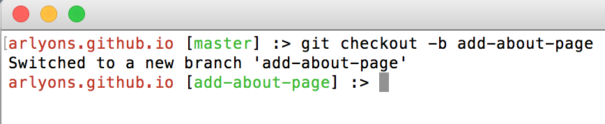
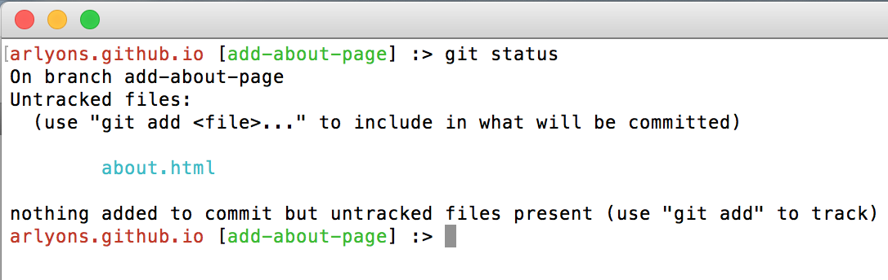
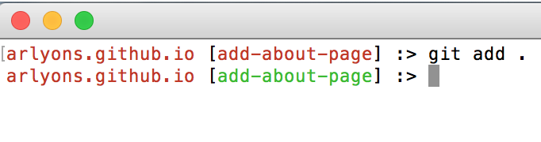
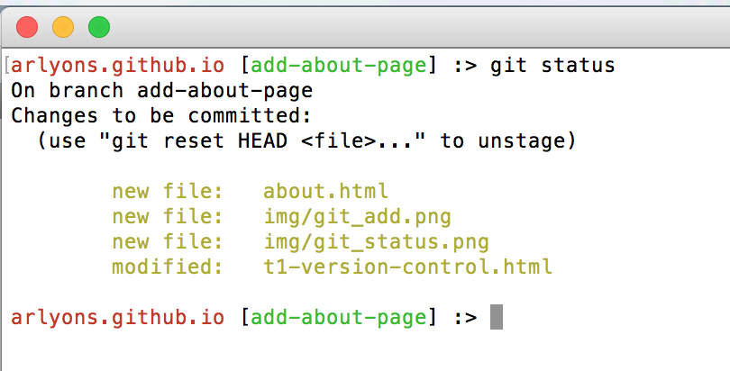

Version control software, like Git, allows for collaboration between developers and provides a safeguard against introducing bugs into projects by storing previously working versions of the project that can be reverted to should something go wrong. This is achieved through branching, or making different versions that branch off of the working copy or master. The newer versions with added features, bug fixes, additions/deletions, etc., are only merged into the master copy if approved by someone on the team.
The key to successful version control is keeping the master copy clean and bug-free. The master copy is the main branch where all approved branches (versions) are merged into. A collaborator begins by first making a copy of this master branch to store locally on their machines. Once they have made their changes locally, they "push" their modified version to GitHub for review by their team. Once approved, their version is merged into the master branch.
This brings us to Git and GitHub. It's important to know that Git is software, and can be used for many projects other than code (spreadsheets, text documents, photos) with or without collaborators. But if you ARE collaborating on a project using Git, you and your team will need a place where your project(s) can be stored and accessed by your different team members. GitHub is once such place.
Here's a quick and dirty overview of the workflow process using Git and GitHub:
Using Git Locally to Track Changes
- Create a new branch
git checkout -b add-about-page - Add your changes
- Commit your changes and include a commit message
- Now we add our new file by typing
git add .. The.signifies add all of the files. We also have the option of replacing it with the names of individual files. - Type
git statusagain and note how our added files appear in yellow:

Now all of the work you do locally (in this example adding an About Page) will be tracked on this specific branch, not the master.
Always start this process by typing git status
I won't cover best practices here, but generally you want to commit small changes often, and convention states use the present tense.
It's a good idea to use git status to display how your changes are being tracked. Below I have my new about.html file staged to be added:


Note the change in highlight from red to green.

Note: I also added some more changes besides the about.html page, just ignore those.